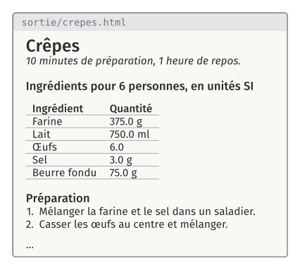
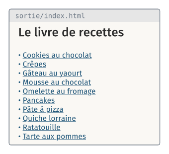

TD 7a — Compléter son projet, par des pull requests#
Note
Les fichiers des TD de la séance sont dans l’archive info01-cours7.zip.
Le TD complète le programme recette.py du projet 4, récupéré depuis
GitHub. Aujourd’hui, le programme calcule les ingrédients d’une recette pour
un nombre de personnes et les écrit dans un fichier CSV. À la fin du TD, il
écrit aussi, pour chaque recette, une page HTML qui réunit le texte de la
recette et le tableau des quantités calculées, puis un sommaire qui relie
ces pages, comme un livre de recettes.


Chaque fonctionnalité se développe sur une branche, puis arrive sur
master par une pull request, fusionnée sur le site de GitHub.
Le guide donne les lignes à modifier comme ceux du projet 4. Une ligne
marquée - est à supprimer, une ligne marquée + est à ajouter, sans le
+ ni les cinq espaces qui le suivent. Les lignes sans signe ne changent
pas et indiquent l’endroit. Le nombre qui suit le signe est le numéro de la
ligne dans VS Code, quand les modifications sont faites de haut en bas.
Étape |
Objectif |
Durée |
|---|---|---|
récupérer le projet et le relancer |
15′ |
|
écrire la page HTML d’une recette : le texte complété, puis pandoc |
25′ |
|
proposer la branche par une pull request |
10′ |
|
écrire les pages de toutes les recettes en une commande |
20′ |
|
écrire une page qui relie les autres ; seconde pull request |
15′ |
|
D5 (bonus) |
publier les pages avec GitHub Pages |
Au début de la séance#
Le compte GitHub du cours 6, avec la clé SSH du cours 6 enregistrée.
L’archive
info01-cours7.zip, copiée depuisformationTempsur le Bureau, puis extraite : clic droit, Extraire tout, en effaçant la fin du dossier proposé,\info01-cours7. Le dossier extrait estDesktop\cours7.
Ouvrir le dossier cours7/7a_recette/ dans VS Code, puis un terminal Git Bash
(menu Terminal, New Terminal ; flèche à côté du +, Git Bash).
D0 · Récupérer le projet#
À faire : le dépôt
recettedanstravail/, depuis GitHub ; votre nom et votre adresse pour ce dépôt.À obtenir :
python recette.py crepes -p 6écritsortie/crepes_6_SI.csv;git log --onelineaffiche l’historique du projet 4.
Cas A, votre dépôt recette est sur GitHub et le programme fonctionne.
Sur sa page GitHub, bouton Code, onglet SSH, copier l’adresse, puis :
cd travail
git clone git@github.com:<compte>/recette.git
cd recette
Cas B, pas de dépôt, ou un programme qui ne fonctionne pas. Le module
publie un dépôt de référence, td7a-recette, sur le compte GitHub
geodata-ing1-info-01. Sur son compte GitHub, créer d’abord un dépôt vide nommé recette (New repository, sans
README), puis :
cd travail
git clone git@github.com:geodata-ing1-info-01/td7a-recette.git recette
cd recette
git remote set-url origin git@github.com:<compte>/recette.git
git push -u origin master
git remote set-url change l’adresse du dépôt distant origin : les
push suivants vont au dépôt de l’élève. Le dernier argument de
git clone nomme le dossier local recette, comme dans le cas A. Le dépôt
garde l’historique du projet 4.
Dans les deux cas, régler votre nom et votre adresse pour ce dépôt :
git config user.name "Prénom Nom"
git config user.email "prenom.nom@exemple.fr"
Vérification : python recette.py crepes -p 6 affiche
crepes pour 6 personnes, en unités SI
Farine : 375.0 g
Lait : 750.0 ml
Œufs : 6.0
Sel : 3.0 g
Beurre fondu : 75.0 g
écrit : C:\Users\eleve\Desktop\cours7\7a_recette\travail\recette\sortie\crepes_6_SI.csv
D1 · La page d’une recette#
À faire : sur une branche
page: compléter le texte de la recette par le tableau des ingrédients (D1.1), puis convertir ce texte en page HTML par pandoc (D1.2) ; un commit pour chacune.À obtenir :
python recette.py crepes -p 6 --pageécritsortie/crepes.md, puissortie/crepes.html, la page de la figure du début du guide.
La page d’une recette réunit deux choses : le texte de la recette (le titre, le temps de préparation, les étapes), écrit à la main dans un fichier Markdown, et le tableau des ingrédients, calculé par le programme. Le programme les réunit dans un fichier Markdown complet (D1.1), puis pandoc convertit ce fichier en page HTML (D1.2).
D1.1 Le texte de la recette, complété par le tableau#
git checkout -b page
cp ../../depart/style.css .
cp ../../depart/recettes/crepes.md ../../depart/recettes/pate_pizza.md recettes/
cp ../../depart/recettes/mousse_chocolat.md ../../depart/recettes/cookies.md recettes/
Chaque recette a maintenant deux fichiers : les ingrédients, en CSV, et le texte, en Markdown. Le texte des crêpes :
# Crêpes
*10 minutes de préparation, 1 heure de repos.*
## Ingrédients
## Préparation
1. Mélanger la farine et le sel dans un saladier.
2. Casser les œufs au centre et mélanger.
3. Verser le lait **peu à peu**, sans cesser de remuer.
4. Ajouter le beurre fondu.
5. Laisser reposer une heure.
6. Cuire dans une poêle chaude, une minute par face.
> La pâte se conserve 24 heures au réfrigérateur.
La section ## Ingrédients est vide. La fonction ecrire_markdown la
remplace par un titre, ## Ingrédients pour 6 personnes, en unités SI,
suivi du tableau des ingrédients, que la fonction tableau écrit en
Markdown, une ligne par ingrédient. replace renvoie le texte avec ce
remplacement. Le résultat est écrit dans sortie/crepes.md.
69
70
+ def tableau(ingredients):
+ """Le tableau Markdown des ingrédients, une ligne par ingrédient."""
+ lignes = ["| Ingrédient | Quantité |", "|---|---|"]
+ for nom, quantite, unite in ingredients:
+ lignes.append("| " + nom + " | " + str(round(quantite, 1)) + " " + unite + " |")
+ return "\n".join(lignes)
+
+
+ def ecrire_markdown(nom, personnes, unites, ingredients):
+ """Le texte de recettes/<nom>.md, avec le tableau des ingrédients sous « ## Ingrédients », écrit dans sortie/ ; renvoie son chemin."""
+ source = (DONNEES / (nom + ".md")).read_text(encoding="utf-8")
+ intitule = "## Ingrédients pour " + str(personnes) + " personnes, en unités " + unites
+ complete = source.replace("## Ingrédients", intitule + "\n\n" + tableau(ingredients))
+ markdown = SORTIE / (nom + ".md")
+ markdown.write_text(complete, encoding="utf-8")
+ return markdown
+
+
89 # ---- Le programme -------------------------------------------------------------
90
…
94 analyseur.add_argument("-p", "--personnes", type=int, default=4, help="nombre de personnes (défaut : 4)")
95 analyseur.add_argument("-u", "--unites", choices=("SI", "US"), default="SI", help="système d'unités (défaut : SI)")
+ analyseur.add_argument("--page", action="store_true", help="écrit aussi la page de la recette : son texte complété, puis sa page HTML")
97 options = analyseur.parse_args()
98 NOM = options.nom
…
116 ecrire_ingredients(fichier, ingredients)
117 print("écrit :", fichier)
+
+ if options.page:
+ markdown = ecrire_markdown(NOM, PERSONNES, UNITES, ingredients)
+ print("écrit :", markdown)
Vérification : python recette.py crepes -p 6 --page se termine par
écrit : C:\Users\eleve\Desktop\cours7\7a_recette\travail\recette\sortie\crepes.md
Ouvrir sortie/crepes.md dans VS Code (Ctrl + Maj + V pour
l’aperçu) :
# Crêpes
*10 minutes de préparation, 1 heure de repos.*
## Ingrédients pour 6 personnes, en unités SI
| Ingrédient | Quantité |
|---|---|
| Farine | 375.0 g |
| Lait | 750.0 ml |
| Œufs | 6.0 |
| Sel | 3.0 g |
| Beurre fondu | 75.0 g |
…
git add style.css recettes
git commit -am "Le texte de la recette, complété par le tableau des ingrédients"
D1.2 La page HTML, par pandoc#
pandoc convertit un fichier Markdown en page HTML, comme au cours 3. La
fonction ecrire_page le lance avec subprocess.run, et copie la feuille
de style style.css à côté de la page. with_suffix(".html") donne le
chemin du même fichier avec l’extension .html.
3 import argparse
4 import csv
+ import shutil
+ import subprocess
7 from pathlib import Path
8
…
20 DONNEES = RACINE / "recettes"
21 SORTIE = RACINE / "sortie"
+ STYLE = RACINE / "style.css"
23
24
…
90
91
+ def ecrire_page(markdown):
+ """La page HTML d'un fichier Markdown de sortie/, par pandoc, avec la feuille de style ; renvoie son chemin."""
+ titre = markdown.read_text(encoding="utf-8").splitlines()[0].lstrip("# ")
+ shutil.copy(STYLE, markdown.parent / "style.css")
+ page = markdown.with_suffix(".html")
+ subprocess.run(["pandoc", str(markdown), "-o", str(page), "--standalone",
+ "--css", "style.css", "--metadata", "pagetitle=" + titre], check=True)
+ return page
+
+
102 # ---- Le programme -------------------------------------------------------------
103
…
133 markdown = ecrire_markdown(NOM, PERSONNES, UNITES, ingredients)
134 print("écrit :", markdown)
+ page = ecrire_page(markdown)
+ print("écrit :", page)
Vérification : python recette.py crepes -p 6 --page se termine par
écrit : C:\Users\eleve\Desktop\cours7\7a_recette\travail\recette\sortie\crepes.md
écrit : C:\Users\eleve\Desktop\cours7\7a_recette\travail\recette\sortie\crepes.html
start sortie/crepes.html
ouvre la page dans le navigateur : celle de la figure du début du guide.
git commit -am "La page HTML de la recette, par pandoc"
D2 · La pull request#
À faire : pousser la branche
page; ouvrir la pull request sur GitHub et la fusionner ; ramenermastersur le poste.À obtenir : sur GitHub, la pull request est fusionnée ;
git log --oneline --graphmontre le commit de fusion surmaster.
git push -u origin page
Sur la page du dépôt, GitHub affiche un bandeau « page had recent pushes » :
bouton Compare & pull request, puis Create pull request. La page de la pull
request montre les commits et les modifications de la branche. Bouton Merge
pull request, puis Confirm merge : la branche est fusionnée dans master,
sur GitHub.
Le dépôt du poste ne le sait pas encore :
git checkout master
git pull
git log --oneline --graph
Vérification : la dernière ligne du graphe est le commit Merge pull request #1, et recette.py contient ecrire_page.
D3 · Toutes les recettes#
À faire : sur une branche
livre: six recettes de plus ; la fonctionnoms_des_recettes(D3.1) ; le programme répété pour chaque nom, avec l’option--toutes(D3.2) ; un commit.À obtenir :
python recette.py --toutes --pageécrit les pages des dix recettes danssortie/.
Jusqu’ici, une commande écrit la page d’une seule recette : il faudrait dix
commandes pour dix recettes. L’option --toutes fait le travail pour chaque
recette de recettes/, en une commande. Le programme a besoin pour cela de
la liste des noms des recettes (D3.1), puis répète ses lignes pour chaque
nom de cette liste (D3.2).
git checkout -b livre
cp ../../depart/recettes/*.csv ../../depart/recettes/*.md recettes/
ls recettes
Vérification : ls liste dix fichiers .csv et dix fichiers .md.
D3.1 La liste des noms des recettes#
Le nom d’une recette est celui de son fichier CSV, sans l’extension :
crepes pour crepes.csv. DONNEES.glob("*.csv") renvoie les chemins des
fichiers de recettes/ dont le nom se termine par .csv, et stem est le
nom d’un chemin sans son extension. La fonction noms_des_recettes renvoie
la liste des dix noms, de cookies à tarte_pommes.
98 "--css", "style.css", "--metadata", "pagetitle=" + titre], check=True)
99 return page
+
+
+ def noms_des_recettes():
+ """Le nom de chaque recette de recettes/ : ses fichiers .csv, sans l'extension."""
+ noms = []
+ for chemin in sorted(DONNEES.glob("*.csv")):
+ noms.append(chemin.stem)
+ return noms
D3.2 Le programme, pour chaque nom#
Le programme ne traite qu’une recette, NOM. Pour les traiter toutes, ses
lignes se répètent dans une boucle sur une liste de noms : tous les noms
avec --toutes, sinon le seul nom donné.
Remplacer les lignes de
analyseur.add_argument("nom", …)àUNITES = options.unitespar celles du bloc ci-dessous, jusqu’àfor nom in noms:.nargs="?"rend le nom facultatif : avec--toutes, il n’est pas donné.Sélectionner les lignes suivantes, de
ingredients = lire_ingredients(…)jusqu’à la fin du fichier, et appuyer surTab: elles passent dans la boucle.Dans ces lignes, remplacer
NOMparnom, la variable de la boucle.
Le programme devient :
# Les valeurs viennent de la ligne de commande
analyseur = argparse.ArgumentParser(description="Les ingrédients d'une recette pour un nombre de personnes, en unités SI ou US.")
analyseur.add_argument("nom", nargs="?", help="la recette : un fichier de recettes/, sans .csv")
analyseur.add_argument("-p", "--personnes", type=int, default=4, help="nombre de personnes (défaut : 4)")
analyseur.add_argument("-u", "--unites", choices=("SI", "US"), default="SI", help="système d'unités (défaut : SI)")
analyseur.add_argument("--page", action="store_true", help="écrit aussi la page de la recette : son texte complété, puis sa page HTML")
analyseur.add_argument("--toutes", action="store_true", help="toutes les recettes de recettes/, au lieu d'une seule")
options = analyseur.parse_args()
PERSONNES = options.personnes
UNITES = options.unites
if options.toutes:
noms = noms_des_recettes()
elif options.nom is not None:
noms = [options.nom]
else:
analyseur.error("donner le nom d'une recette, ou --toutes")
for nom in noms:
ingredients = lire_ingredients(DONNEES / (nom + ".csv"))
ingredients = adapter(ingredients, PERSONNES_RECETTE, PERSONNES)
if UNITES == "US":
ingredients = convertir(ingredients, VERS_US)
else:
ingredients = convertir(ingredients, VERS_SI)
print(nom, "pour", PERSONNES, "personnes, en unités", UNITES)
afficher(ingredients)
# Le résultat, dans sortie/
SORTIE.mkdir(exist_ok=True)
fichier = SORTIE / (nom + "_" + str(PERSONNES) + "_" + UNITES + ".csv")
ecrire_ingredients(fichier, ingredients)
print("écrit :", fichier)
if options.page:
markdown = ecrire_markdown(nom, PERSONNES, UNITES, ingredients)
print("écrit :", markdown)
page = ecrire_page(markdown)
print("écrit :", page)
Vérification :
python recette.py --toutes --page
affiche chaque recette, puis les fichiers écrits : 10 pages HTML
en tout. Sans nom ni --toutes, le programme s’arrête sur
recette.py: error: donner le nom d'une recette, ou --toutes
git add recettes
git commit -am "Toutes les recettes"
D4 · Le sommaire#
À faire : la fonction
ecrire_sommaire, appelée après la boucle ; un commit ; la pull request de la branchelivre.À obtenir :
sortie/index.htmla un lien vers chaque page ; la branchelivreest fusionnée dansmastersur GitHub.
Le sommaire est une page de plus, écrite comme les autres : un fichier
Markdown, sortie/index.md, converti par ecrire_page. Il contient un
titre, puis une liste Markdown, un lien par recette :
- [Crêpes](crepes.html). Le texte du lien est le titre de la recette, la
première ligne de son fichier .md, sans le # .
108
109
+ def ecrire_sommaire(noms):
+ """Le sommaire : sortie/index.md, un lien vers la page de chaque recette, puis sa page HTML ; renvoie son chemin."""
+ lignes = ["# Le livre de recettes", ""]
+ for nom in noms:
+ titre = (DONNEES / (nom + ".md")).read_text(encoding="utf-8").splitlines()[0].lstrip("# ")
+ lignes.append("- [" + titre + "](" + nom + ".html)")
+ markdown = SORTIE / "index.md"
+ markdown.write_text("\n".join(lignes) + "\n", encoding="utf-8")
+ return ecrire_page(markdown)
+
+
121 # ---- Le programme -------------------------------------------------------------
122
…
161 page = ecrire_page(markdown)
162 print("écrit :", page)
+
+ # Le sommaire des pages écrites
+ if options.page and options.toutes:
+ sommaire = ecrire_sommaire(noms)
+ print("écrit :", sommaire)
Vérification : python recette.py --toutes --page se termine par
écrit : C:\Users\eleve\Desktop\cours7\7a_recette\travail\recette\sortie\index.html
start sortie/index.html ouvre le sommaire ; chaque lien ouvre une page.
git commit -am "Le sommaire"
git push -u origin livre
Puis, sur GitHub, la pull request de la branche livre, fusionnée comme à
l’étape D2, et sur le poste :
git checkout master
git pull
D5 (bonus) · Les pages sur GitHub Pages#
À faire : copier les pages dans un dossier
docs/du dépôt ; régler GitHub Pages sur ce dossier.À obtenir : le sommaire s’ouvre à l’adresse
https://<compte>.github.io/recette/.
sortie/ n’est pas versionné. GitHub Pages publie un dossier versionné :
une copie des pages, dans docs/.
mkdir docs
cp sortie/*.html sortie/style.css docs/
git add docs
git commit -m "Les pages, publiées"
git push
Sur GitHub : Settings, Pages ; Source : Deploy from a branch ; Branch :
master, dossier /docs ; Save. Une minute plus tard, la page Settings,
Pages donne l’adresse du site.
Vérification : https://<compte>.github.io/recette/ affiche le
sommaire. Les pages publiées sont une copie : après une modification du
programme, refaire la copie, le commit et le push.